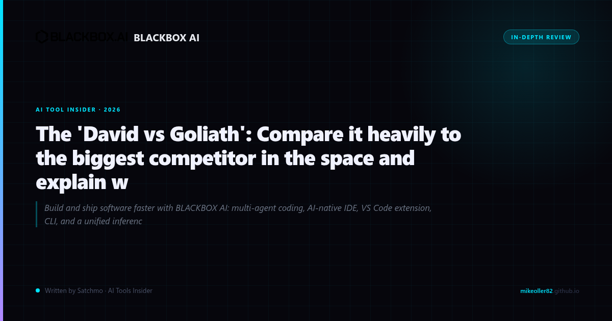

THE GOLIATH YOU KNOW — AND THE DAVID YOU DON'T
GitHub Copilot is everywhere. Microsoft backs it. Every developer blog touts it. If you walk into any tech company and ask about AI code assistance, Copilot is the default answer. It's the 800-pound gorilla of AI coding tools.
But here's what the marketing doesn't tell you: there's a tool that does everything Copilot does — and in several key areas, does it better — for a fraction of the price. It's called BLACKBOX AI, and it's the underdog worth your attention.
Try BLACKBOX AI Free →THE PRICE DIFFERENCE ALONE SHOULD MAKE YOU THINK
Let's start with the math because, frankly, that's where Copilot gets embarrassing.
GitHub Copilot costs $10/month for individuals — but that's the bare minimum. Want access to the latest models? Better check the fine print. And for teams? You're looking at $19/month per user minimum, scaling fast.
BLACKBOX AI's Pro plan? $10/month. But here's what your $10 gets you in Blackbox that Copilot can't match:
- 300+ AI models — not just GPT-4o. You get Claude 4.5, Gemini, Llama, and dozens more. Choose the model that fits your specific coding task.
- Autonomous coding agents — Blackbox's CyberCoder can write, debug, and deploy code autonomously. Copilot's agent capabilities? Limited at best.
- Image-to-code — upload a screenshot of a UI, get working code. Copilot doesn't offer this.
- Multi-agent collaboration — multiple AI agents working on your codebase simultaneously.
The Pro Plus plan at $20/month gives you "your entire AI engineering team" — a claim Copilot can't make at $39/month.
One FHSEOHub comparison put it plainly: Blackbox AI at Free to $100/month versus Copilot at $10 to $39/month. The value proposition isn't close.
See Current Pricing for BLACKBOX AI →WHAT THE USERS ACTUALLY SAY
Here's the thing about Reddit comparisons — they're honest because nobody has a marketing budget behind their opinion.
One Reddit user in r/BlackboxAI_ laid it out: "Copilot is strong for continuous inline completion. Blackbox AI is more reliable for correctness, debugging, and working with evolving code."
That's the distinction that matters. Copilot is great for quick autocomplete — type a few characters, get a suggestion, move on. Blackbox AI is better when something breaks and you need actual intelligence to fix it.
Another reviewer at AIUnveiled noted: "GitHub Copilot scores slightly higher on raw code quality (9.5 vs 9.2), but BLACKBOX AI wins decisively on..." — the article was highlighting specific advantages where it matters: pricing, model choice, and autonomous capability.
Copilot is strong for continuous inline completion. Blackbox AI is more reliable for correctness, debugging, and working with evolving code. — Reddit user
WHERE BLACKBOX ACTUALLY WINS
Let me be specific about where the underdog takes the crown:
- Model choice: You're not locked into one AI. Switch between models based on the task. Need creative code? Try Claude. Need speed? GPT-4o. Blackbox gives you that choice. Copilot doesn't.
- Autonomous agents: CyberCoder isn't a gimmick. It can handle multi-file refactoring, test generation, and even deployment tasks. Copilot's autocomplete is impressive — but it's not an agent.
- Debugging capability: If you've ever spent hours on a bug, you know this matters. Blackbox's debugging mode uses multiple models to triangulate the problem. That's not marketing — that's hours of your life back.
- No vendor lock-in: Copilot ties you to the GitHub ecosystem. Blackbox integrates with VS Code, JetBrains, and more. Your choice, your workflow.
WHERE COPILOT STILL HAS THE EDGE
I won't pretend Blackbox is perfect. Here's where Copilot still leads:
- IDE integration: Copilot's deep integration with GitHub and VS Code is polished. Blackbox is catching up but not quite there.
- Enterprise features: If you need SSO, admin controls, and compliance certifications — Copilot's enterprise tier delivers. Blackbox's $100/month enterprise plan exists but is newer.
- Raw code quality: In head-to-head benchmarks, Copilot occasionally edges out on very short snippets. But we're talking margin-of-error differences.
THE BOTTOM LINE
GitHub Copilot is the safe choice. It's what everyone uses, what every blog recommends, what every tech company standardizes on.
BLACKBOX AI is the smarter choice. $10/month gets you more models, autonomous agents, and better debugging. The question isn't whether Blackbox can compete — it's whether you're paying Microsoft premiums for a name when the product is genuinely better value.
If you're a solo developer, freelancer, or small team — you are literally leaving money on the table by choosing Copilot. The underdog has the better product at the better price. Sometimes the obvious choice isn't the right one.
Claim Your BLACKBOX AI Deal →